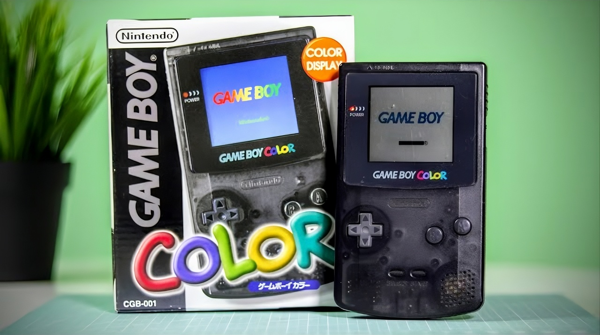
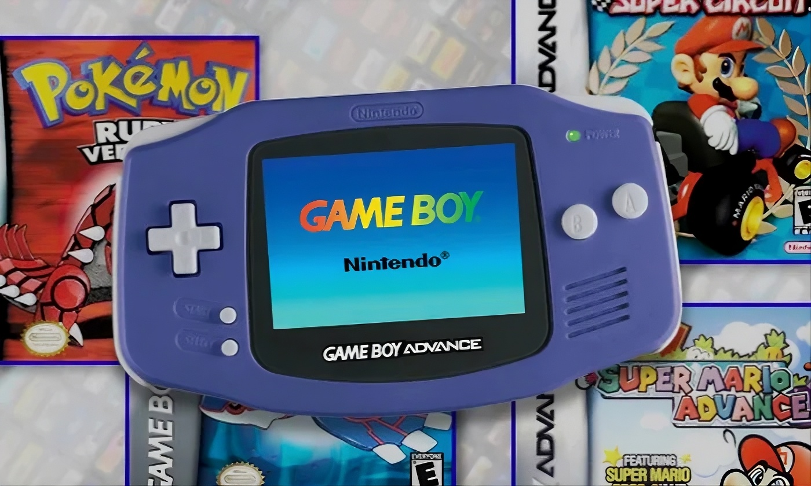
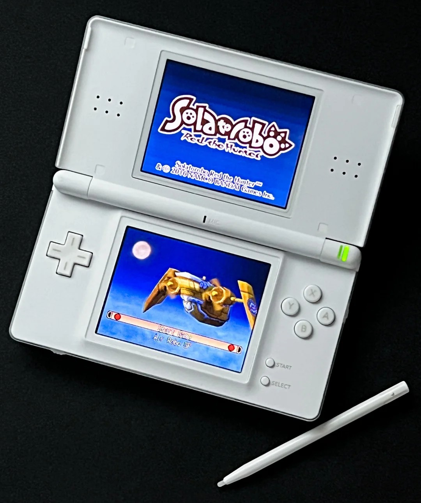
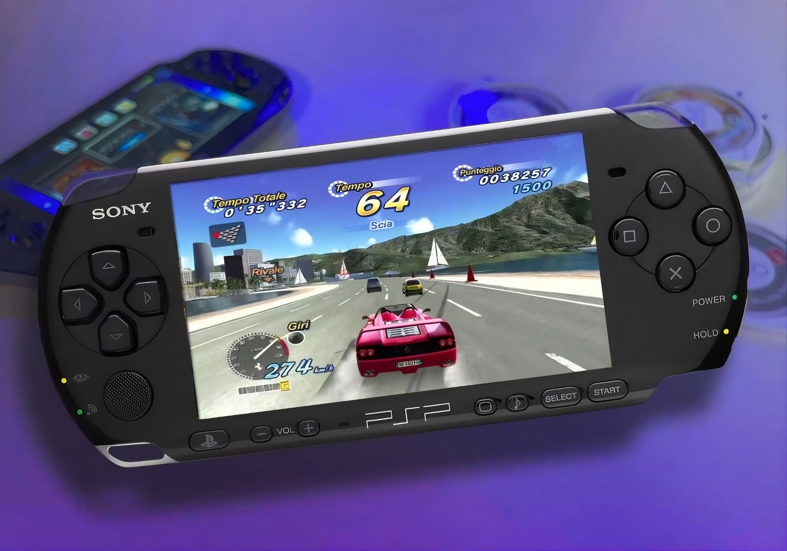
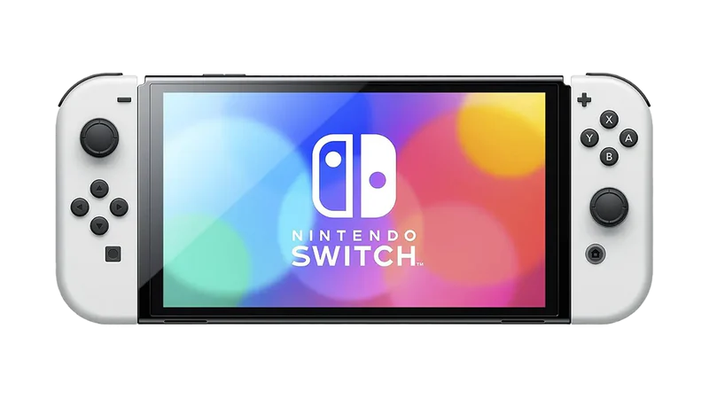
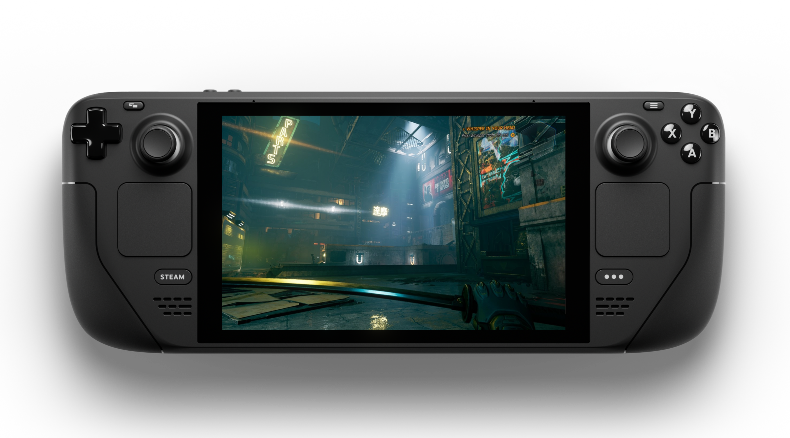
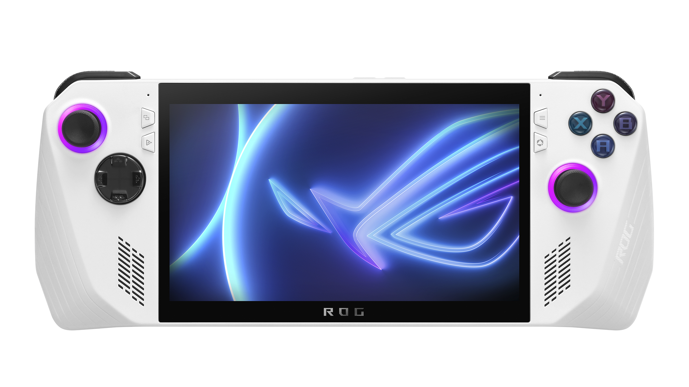

Physical Icons.
The silicon and plastic that defined a generation.

The 8-Bit Foundation
The 1998 Game Boy Color™ was the peak of the 8-bit era. It took the legendary battery life of the original "Brick" and added a vibrant color palette, becoming a global phenomenon fueled by the launch of Pokémon®.
- Display: 2.3-inch Reflective LCD
- Colors: 56 simultaneous colors from a 32,768 palette
- Legacy: 118 million units sold worldwide
The 32-Bit Evolution
Released in 2001, the GBA brought SNES-quality graphics to the palm of your hand. It introduced the wide "Landscape" form factor and L/R shoulder buttons that are still the standard for handheld ergonomics today.
- CPU: 16.7 MHz 32-bit ARM7TDMI
- Resolution: 240 × 160 pixels
- Library: Full backwards compatibility with original GB/GBC games


The Best Seller
The Nintendo DS introduced dual screens and touch input in 2004. The DS Lite revision became the best-selling handheld ever, proving that innovative input methods could compete with raw horsepower.
- Innovation: Resistive Touch Screen + Stylus
- Wireless: Built-in Wi-Fi for local and online play
- Sales: Over 154 million units shifted
The Multimedia Powerhouse
Sony's entry with the PSP (PlayStation Portable) changed the game in 2004. It was the most powerful handheld of its time, featuring a stunning widescreen and an optical disc format (UMD) for games and movies.
- Screen: 4.3-inch TFT LCD (16:9 aspect ratio)
- Media: Universal Media Disc (UMD) + Memory Stick Pro Duo
- Impact: First handheld to offer true console-quality 3D graphics

The Modern Hybrid Era

Nintendo Switch
The **Nintendo Switch OLED** remains the standard for hybrid versatility, offering a massive library of iconic first-party titles.

Steam Deck
The **Steam Deck OLED** brought enthusiast PC performance and the open-source power of SteamOS to a high-end handheld form factor.

ROG Ally
The **ASUS ROG Ally** pushes boundaries with a 120Hz display and high-performance APUs, running full Windows for total flexibility.
Technical Evolution
The 8-Bit Era
Characterized by monochrome displays and simple Z80 processors. These devices relied on mechanical durability and high-efficiency reflective screens to provide weeks of play on a single set of AA batteries.
The 32-Bit Shift
A move toward RISC architecture allowed for complex transparency effects and 3D backgrounds. This era saw the introduction of the GBA SP, which finalized the modern "rechargeable" standard for portables.
The HD Transition
Widescreen displays and optical media brought full cinematic experiences to the pocket. This era introduced advanced Wi-Fi networking and local ad-hoc multiplayer that redefined the social aspect of gaming.